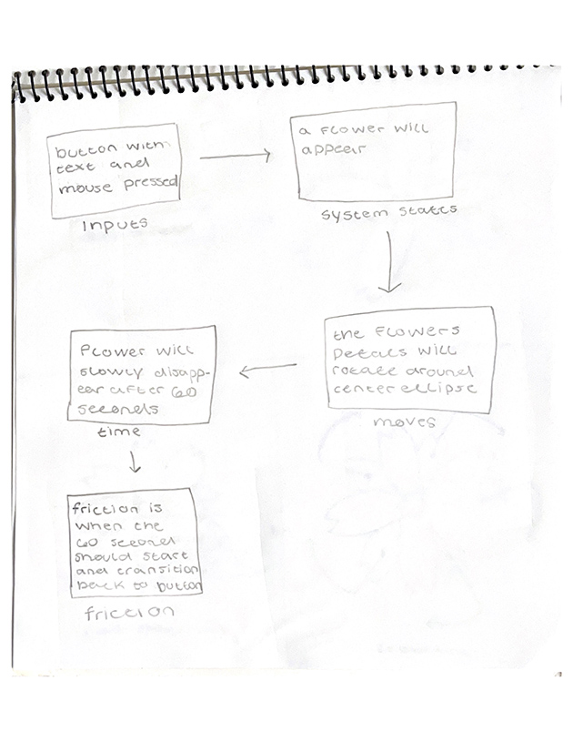
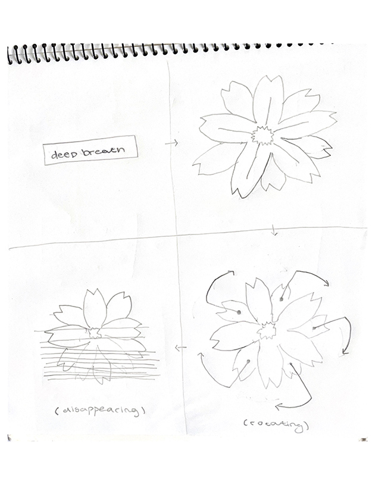

Micro Project
home
number1
number2
number3
number4
number5
number6
number7
number8
number9
mircoIdea1
mircoIdea2
mircoIdea3
microProject
Micro Project
The core rule of this sytem is if button is pressed then a flower will appear, and if button is not pressed then nothing will happen.
The change occurs only when the button is pressed, when button is pressed and flower appears and rotates then after ~60 secs it will disappear.
The system can become unoccurs when the amount of time should be from when the button is pressed and the flower first appears to the amount of time should be
to when it rotates and then disappears. Also the flow of the flower transitioning back to the button there could be uneveness. To me this
idea is worth developing because it seems simple while also challeneging myslef, I also am alittle bit worried the rotation movement but I do like this
idea.

